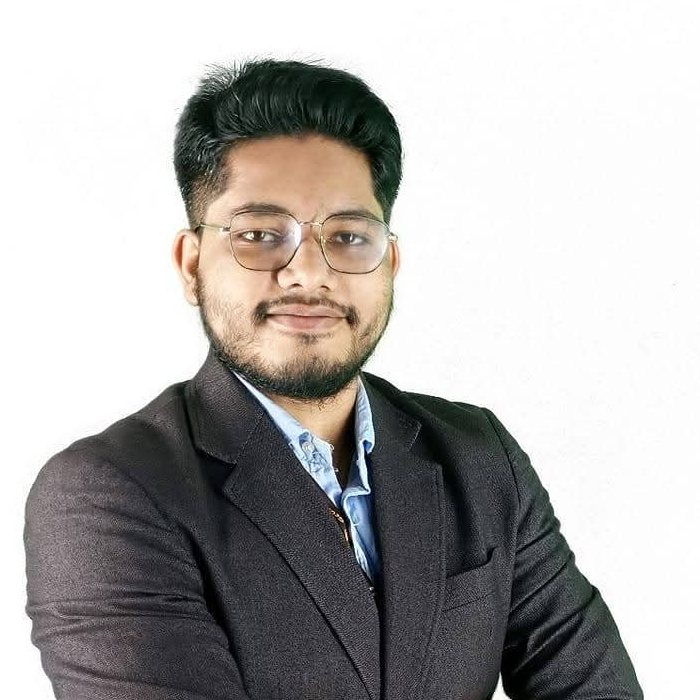
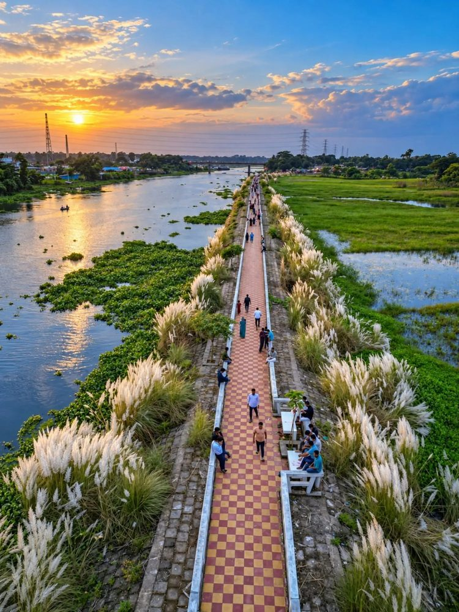
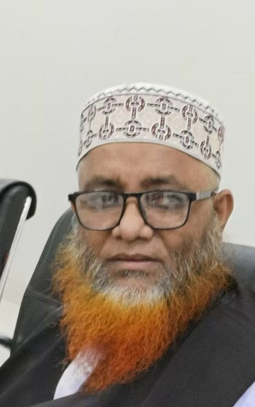
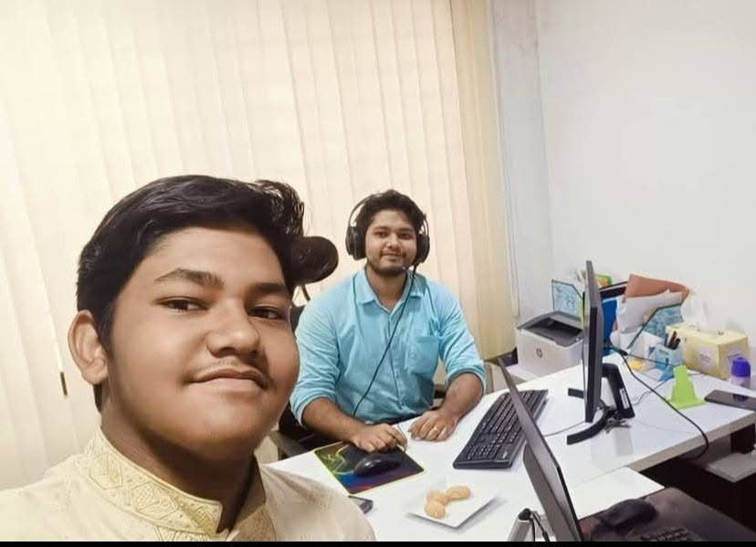
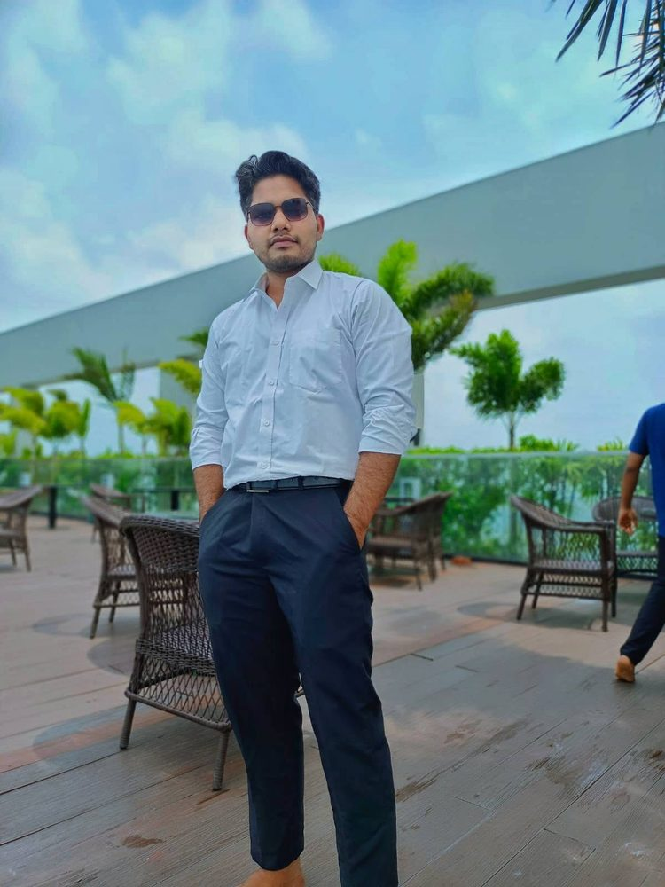
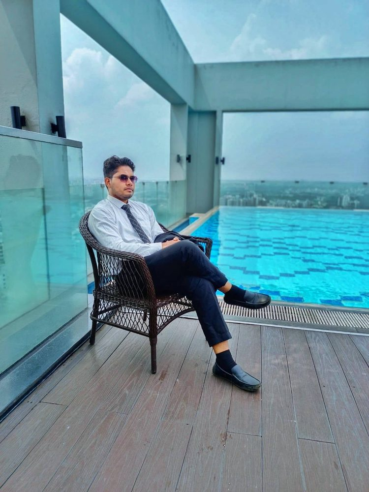

From the banks of the Dakatia to Dhakaডাকাতিয়ার তীর থেকে ঢাকা
Where I come from, the family that raised me, and the schools, friends and workplace that shaped who I am.
আমি কোথা থেকে এসেছি, কোন পরিবারে বড় হয়েছি, আর কোন স্কুল, বন্ধু ও কর্মক্ষেত্র আমাকে আজকের আমি করে তুলেছে।
Bornজন্ম
March 2001, Jangalia, Cumillaমার্চ ২০০১, জাঙ্গালিয়া, কুমিল্লা
Hometownগ্রামের বাড়ি
Shahrasti, Chandpurশাহরাস্তি, চাঁদপুর
Nowবর্তমানে
Dhakaঢাকা
Early lifeশৈশব
I was born in March 2001 in Jangalia, Cumilla, the busy part of the city around its central bus terminal. My first years of schooling were in Cumilla too, at Comilla Model School in Bakshinagar, Sujanagar, where I learned to read, write and make my first friends.
২০০১ সালের মার্চে কুমিল্লার জাঙ্গালিয়ায় আমার জন্ম, শহরের কেন্দ্রীয় বাস টার্মিনালকে ঘিরে ব্যস্ত একটি এলাকায়। পড়াশোনার প্রথম বছরগুলোও কেটেছে কুমিল্লাতেই, সুজানগরের বক্সিনগরে কুমিল্লা মডেল স্কুলে। সেখানেই পড়তে-লিখতে শিখি, পাই জীবনের প্রথম বন্ধুদের।
Hometown by the riverনদীর ধারে আমার গ্রাম
Home, for me, is Shahrasti in Chandpur district. This is where I grew up, close to the Dakatia, the main river that winds through the upazila. Shahrasti shaped my childhood, and the values I learned there still travel with me in Dhaka.
আমার কাছে বাড়ি মানে চাঁদপুর জেলার শাহরাস্তি। এখানেই আমি বড় হয়েছি, উপজেলার প্রধান নদী ডাকাতিয়ার কাছে। শাহরাস্তি আমার শৈশব গড়ে দিয়েছে, আর সেখানে শেখা মূল্যবোধ আজও ঢাকায় আমার সঙ্গী।

My familyআমার পরিবার
Everything I have achieved started at home. My family has always put education, faith and hard work first.
আমার সব অর্জনের শুরু ঘর থেকেই। আমার পরিবার সবসময় শিক্ষা, ধর্মবিশ্বাস ও পরিশ্রমকে সবার আগে রেখেছে।
Mowlana Kazi Salimullahমাওলানা কাজী সলিমুল্লাহ
Former Principal of Rachia Madrasa. He now serves as the Nikah Registrar (Kazi) for Chitoshi Paschim Union, Shahrasti, Chandpur.
রাচিয়া মাদ্রাসার সাবেক অধ্যক্ষ। বর্তমানে তিনি চাঁদপুরের শাহরাস্তি উপজেলার চিতোষী পশ্চিম ইউনিয়নের নিকাহ রেজিস্ট্রার (কাজী) হিসেবে দায়িত্ব পালন করছেন।
Jannatun Naimজান্নাতুন নাঈম
A homemaker and the heart of our family, who has looked after all of us with endless care.
একজন গৃহিণী এবং আমাদের পরিবারের প্রাণ, যিনি অসীম যত্নে আমাদের সবাইকে আগলে রেখেছেন।
Anika Tabassumআনিকা তাবাসসুম
A third-year student in the Department of Zoology at the University of Dhaka.
ঢাকা বিশ্ববিদ্যালয়ের প্রাণিবিদ্যা বিভাগের তৃতীয় বর্ষের শিক্ষার্থী।
My younger brotherআমার ছোট ভাই
Studying in the second year of Alim at Darunnajat Siddiquia Kamil Madrasah, Demra, Dhaka.
ঢাকার ডেমরায় দারুননাজাত সিদ্দীকিয়া কামিল মাদ্রাসায় আলিম দ্বিতীয় বর্ষে পড়ছে।


School daysস্কুলজীবন
My high school years were spent in Shahrasti. I started Class 6 at Nizmeher Model Pilot High School, spent Classes 7 and 8 at Shahrasti Model School, and then returned to Nizmeher Model Pilot High School for Classes 9 and 10 in the Science group.
মাধ্যমিকের বছরগুলো কেটেছে শাহরাস্তিতে। ষষ্ঠ শ্রেণিতে নিজমেহার মডেল পাইলট উচ্চ বিদ্যালয়ে পড়ি, সপ্তম ও অষ্টম শ্রেণি শাহরাস্তি মডেল স্কুলে, তারপর নবম ও দশম শ্রেণিতে বিজ্ঞান বিভাগে আবার নিজমেহার মডেল পাইলট উচ্চ বিদ্যালয়ে ফিরে আসি।
In Class 10 I was the first boy in my class, a result I'm still proud of and one that taught me what steady effort can do.
দশম শ্রেণিতে আমি ক্লাসে প্রথম হই। এই ফলাফল নিয়ে আজও গর্ব করি, আর এটিই আমাকে শিখিয়েছে নিয়মিত পরিশ্রম কী করতে পারে।
- Class 6ষষ্ঠ শ্রেণি Nizmeher Model Pilot High Schoolনিজমেহার মডেল পাইলট উচ্চ বিদ্যালয়
- Class 7 – 8সপ্তম – অষ্টম Shahrasti Model Schoolশাহরাস্তি মডেল স্কুল
- Class 9 – 10নবম – দশম Nizmeher Model Pilot High School, Science · First in classনিজমেহার মডেল পাইলট উচ্চ বিদ্যালয়, বিজ্ঞান · ক্লাসে প্রথম
College lifeকলেজজীবন
For my higher secondary studies I went to Haziganj Model Government College in Chandpur, one of the leading colleges in the area, where I studied in the Science group.
উচ্চ মাধ্যমিকে আমি চাঁদপুরের হাজীগঞ্জ মডেল সরকারি কলেজে বিজ্ঞান বিভাগে পড়েছি, যা এলাকার অন্যতম সেরা কলেজ।
University lifeবিশ্ববিদ্যালয়জীবন
University brought me to Dhaka. I studied English at Dhaka College, one of the oldest educational institutions in the country, founded in 1841 and affiliated with the University of Dhaka.
উচ্চশিক্ষার জন্য ঢাকায় আসি। ঢাকা বিশ্ববিদ্যালয়ের অধিভুক্ত ঢাকা কলেজে ইংরেজি বিভাগে পড়েছি। ১৮৪১ সালে প্রতিষ্ঠিত এই কলেজ দেশের প্রাচীনতম শিক্ষাপ্রতিষ্ঠানগুলোর একটি।
Outside the classroom I served as Treasurer of the Language Club, my first real taste of managing money, people and events, and an early sign of the operations work I would later love.
ক্লাসের বাইরে আমি ল্যাঙ্গুয়েজ ক্লাবের কোষাধ্যক্ষ ছিলাম। অর্থ, মানুষ ও অনুষ্ঠান সামলানোর প্রথম বাস্তব অভিজ্ঞতা এখানেই, আর পরে যে অপারেশনসের কাজ ভালোবেসে ফেলি, তার প্রথম আভাসও।
Presidency Universityপ্রেসিডেন্সি ইউনিভার্সিটি
Learning didn't stop when I started working. I'm now pursuing an MBA in Management Information Systems (MIS) at Presidency University in Dhaka, studying alongside my full-time role at Gcontent.
চাকরি শুরু করার পরও শেখা থামেনি। এখন ঢাকার প্রেসিডেন্সি ইউনিভার্সিটিতে ম্যানেজমেন্ট ইনফরমেশন সিস্টেমসে (MIS) এমবিএ করছি, Gcontent-এ পূর্ণকালীন কাজের পাশাপাশি।
The goal is to sharpen my ability to lead digital transformation and technology strategy, connecting the operations and automation work I do every day with the bigger business picture.
লক্ষ্য হলো ডিজিটাল রূপান্তর ও প্রযুক্তি কৌশলে নেতৃত্ব দেওয়ার দক্ষতা বাড়ানো, যাতে প্রতিদিনের অপারেশনস ও অটোমেশনের কাজকে ব্যবসার বড় চিত্রের সঙ্গে যুক্ত করতে পারি।
Office lifeঅফিস জীবন
Gcontent was my first workplace, and it still is. I joined in December 2021 as a Junior Graphic Designer and have grown with the company ever since, through social media, HR & Admin, and now as Administrative Coordinator.
Gcontent আমার প্রথম কর্মস্থল, এবং এখনো সেখানেই আছি। ২০২১ সালের ডিসেম্বরে জুনিয়র গ্রাফিক ডিজাইনার হিসেবে যোগ দিই। তারপর সোশ্যাল মিডিয়া, এইচআর ও অ্যাডমিন হয়ে এখন অ্যাডমিনিস্ট্রেটিভ কো-অর্ডিনেটর; প্রতিষ্ঠানের সঙ্গে সঙ্গেই আমিও বেড়ে উঠেছি।
More than the job titles, it's the people I remember: so many colleagues who became friends, office celebrations, hangouts after work, and plenty of buffets along the way. Great times, and many more memories still being made.
পদবির চেয়েও বেশি মনে থাকে মানুষগুলোকে: কত সহকর্মী বন্ধু হয়ে গেছেন, অফিসের উদযাপন, কাজের পরের আড্ডা, আর অসংখ্য বুফে। দারুণ সময় কেটেছে, আর আরও অনেক স্মৃতি এখনো তৈরি হচ্ছে।

